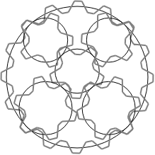
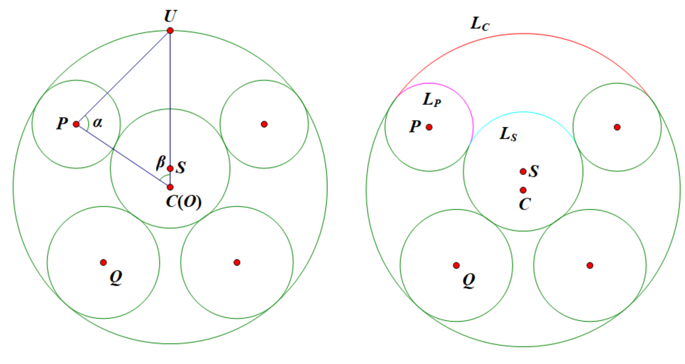

Project Euler 620
Project Euler 620
题目
Planetary Gears
A circle \(C\) of circumference \(c\) centimetres has a smaller circle \(S\) of circumference \(s\) centimetres lying off-centre within it. Four other distinct circles, which we call “planets”, with circumferences \(p\), \(p\), \(q\), \(q\) centimetres respectively (\(p<q\)), are inscribed within \(C\) but outside \(S\), with each planet touching both \(C\) and \(S\) tangentially. The planets are permitted to overlap one another, but the boundaries of \(S\) and \(C\) must be at least 1cm apart at their closest point.
Now suppose that these circles are actually gears with perfectly meshing teeth at a pitch of 1cm. \(C\) is an internal gear with teeth on the inside. We require that \(c, s, p, q\) are all integers (as they are the numbers of teeth), and we further stipulate that any gear must have at least \(5\) teeth.
Note that “perfectly meshing” means that as the gears rotate, the ratio between their angular velocities remains constant, and the teeth of one gear perfectly align with the groves of the other gear and vice versa. Only for certain gear sizes and positions will it be possible for \(S\) and \(C\) each to mesh perfectly with all the planets. Arrangements where not all gears mesh perfectly are not valid.
Define \(g(c,s,p,q)\) to be the number of such gear arrangements for given values of \(c\), \(s\), \(p\), \(q\): it turns out that this is finite as only certain discrete arrangements are possible satisfying the above conditions. For example, \(g(16,5,5,6)=9\).
Here is one such arrangement:

Let \(G(n) = \sum_{s+p+q\le n} g(s+p+q,s,p,q)\) where the sum only includes cases with \(p<q\), \(p\ge 5\), and \(s\ge 5\), all integers. You are given that \(G(16)=9\) and \(G(20)=205\).
Find \(G(500)\).
解决方案
设所有齿轮的齿距为 \(1\text{cm}\)，因此节圆周长就是齿数（题面用的 \(c,s,p,q\) 均为整数）。把圆周长换成节圆半径：\(R_C=\dfrac{c}{2\pi}, R_S=\dfrac{s}{2\pi}, R_P=\dfrac{p}{2\pi}, R_Q=\dfrac{q}{2\pi}.\)在本题的求和里始终取\(c=s+p+q.\)

外圈 \(C\) 是内齿轮（齿在内侧），但节圆仍是半径 \(R_C\) 的圆。内圈 \(S\) 与行星齿轮 \(P,Q\) 都是普通外齿轮。
利用旋转对称性，可不失一般性令 \(C\) 的圆心在原点 \(O\)，令 \(S\) 的圆心在竖直向上 \(U=(0,d)\)，其中 \(d=|OU|\)。
一个行星齿轮（以 \(P\) 为例）要求：\(P\) 与 \(C\) 内切：行星在大圆内侧与之相切，故圆心距\(OP = R_C - R_P\)；\(P\) 与 \(S\) 外切：圆心距为\(UP = R_S + R_P.\)
因此 \(P\) 的圆心是两圆交点：以 \(O\) 为圆心半径 \(R_C-R_P\) 的圆，与以 \(U\) 为圆心半径 \(R_S+R_P\) 的圆。只要交点存在，就得到左右对称的两颗 \(P\) 行星；\(Q\) 同理。行星允许重叠，所以不需要再管行星之间的互相干涉。于是整套布局（在固定大小 \(s,p,q\) 下）只有一个连续自由度：偏心距 \(d\)。
齿距为\(1\text{cm}\)的关键含义在于：沿节圆走过弧长 \(\ell\)，等价于跨过了 \(\ell\) 个齿距。要让所有接触处的齿槽在运动过程中始终对齐，必须要求沿任一闭合回路累积的齿距位移为整数（即回到同一齿槽相位）。取上半部分两颗 \(P\) 行星（左右对称），定义三段弧长（均按节圆弧长计）：
- \(L_C\)：外圈 \(C\) 上方连接两颗 \(P\) 与 \(C\) 的接触点的那段弧；
- \(L_S\)：内圈 \(S\) 上方连接两颗 \(P\) 与 \(S\) 的接触点的那段弧；
- \(L_P\)：左侧 \(P\) 行星从其与 \(C\) 的接触点沿指定方向到其与 \(S\) 的接触点的那段弧（右侧 \(P\) 对称同长）。
考虑由这些接触弧构成的闭合路径：从左 \(P\) 与 \(C\) 的接触点出发，沿左 \(P\) 到达其与 \(S\) 的接触点，再沿 \(S\) 的上方弧到达右 \(P\) 与 \(S\) 的接触点，沿右 \(P\) 回到其与 \(C\) 的接触点，最后沿 \(C\) 的上方弧回到起点。将内啮合与外啮合在相位传递方向上的差异折算为弧长的符号后，该闭合回路的净齿距位移恰为\(D= 2L_P - L_C - L_S.\)因此，完美啮合的必要且充分条件是\(D\in\mathbb Z.\)该条件保证上半部分的四个接触（\(C\)–\(P\) 两处与 \(S\)–\(P\) 两处）在同一相位约束下同时成立，从而外圈 \(C\)、内圈 \(S\) 与两颗 \(P\) 行星可同时完美啮合。
进一步，在 \(c=s+p+q\) 的约束下，下半部分两颗 \(Q\) 行星的啮合条件并不额外引入独立限制。其理由如下：仍以相同的两端点（两颗 \(P\) 在 \(C\) 上方的接触点）为界，除上半部分路径外，还存在一条经由下半部分（经过两颗 \(Q\) 以及 \(C,S\) 的下方弧段）的路径连接这两个端点。将上、下两条路径首尾拼接形成闭合回路时，所得到的总路径在每个齿轮上要么走过整圈周长的若干倍，要么与上半部分的弧段互为补弧；因此该闭合回路的净齿距位移与 \(c,s,p,q\) 的整数线性组合相差一个整数。由于 \(c,s,p,q\) 均为整数，且 \(c=s+p+q\) 使得该补回路与全系统的接触结构相匹配，故当上半部分满足 \(D\in\mathbb Z\) 时，下半部分对应的净位移亦必为整数，从而两颗 \(Q\) 行星也与 \(C\)、\(S\) 同时完美啮合。
所以问题核心变成：对给定 \(s,p,q\)，当偏心距 \(d\) 变化时，表达式 \(D(d)\) 什么时候是整数，以及会有多少个整数。
考虑三角形 \(OUP\)（\(P\) 是左上那颗 \(P\) 行星的圆心）。为了避免到处出现 \(2\pi\)，把所有长度乘上 \(2\pi\) 记成周长单位，令\(PS = s+p, PC = c-p = s+q, CU = 2\pi d.\)记\(\alpha\)：在点 \(P\) 的夹角 \(\angle OPU\)；\(\beta\)：在点 \(O\) 的夹角（\(P\) 相对竖直轴的偏角），使得两颗 \(P\) 在 \(C\) 上的接触点在 \(O\) 处的圆心角为 \(2\beta\)。
可见，那么三段弧长为如下。\(C\) 上方两接触点对应的圆心角是 \(2\beta\)，弧长\(L_C = \dfrac{2\beta}{2\pi}c = \dfrac{\beta}{\pi}(s+p+q).\)在三角形里，点 \(U\) 的内角为 \(\pi-\alpha-\beta\)。但 \(S\) 上方弧对应的是相对“向上竖直方向”的夹角，等于其补角 \(\alpha+\beta\)。左右对称两点夹角为 \(2(\alpha+\beta)\)，因此\(L_S=\dfrac{2(\alpha+\beta)}{2\pi}s=\dfrac{\alpha+\beta}{\pi}s.\)注意 \(P\) 与 \(C\) 为内切：\(P\) 上的接触点在“指向 \(O\)”方向的反向；而 \(P\) 与 \(S\) 为外切：接触点在“指向 \(U\)”方向。于是 \(P\) 上两接触点在 \(P\) 处夹角不是 \(\alpha\)，而是 \(\pi-\alpha\)。取右侧那段弧：\(L_P=\dfrac{\pi-\alpha}{2\pi}p=\left(\dfrac12-\dfrac{\alpha}{2\pi}\right)p.\)
由余弦定理可直接写出\(\cos\alpha(d)=\dfrac{(s+p)^2+(s+q)^2-t^2}{2(s+p)(s+q)},\cos\beta(d)=\dfrac{(s+q)^2+t^2-(s+p)^2}{2(s+q)t}.\)对应到节圆弧长（前文已经给出）：\(L_P(d)=\left(\dfrac12-\frac{\alpha(d)}{2\pi}\right)p,L_C(d)=\dfrac{\beta(d)}{\pi}(s+p+q),L_S(d)=\dfrac{\alpha(d)+\beta(d)}{\pi}s.\)从而
\[ D(d)=2L_P(d)-L_C(d)-L_S(d) = p-\frac{(p+s)\alpha(d)+(p+q+2s)\beta(d)}{\pi}. \]
由上式可见，\(\alpha(d)\) 与 \(\beta(d)\) 都由余弦定理给出，且随 \(t=2\pi d\) 连续变化，因此 \(D(d)\) 连续。并且当 \(d\) 增大时，三角形 \(OUP\) 在边 \(OU\) 方向张开，角 \(\alpha(d)\) 与 \(\beta(d)\) 随之增大（这一点可直接由上述 \(\cos\alpha(d),\cos\beta(d)\) 的表达式随 \(t\) 的变化得出），从而\(D(d)=2L_P(d)-L_C(d)-L_S(d)\)在可行区间内连续且严格单调（随 \(d\) 增大严格减小）。
接下来讨论 \(d\) 的可行区间与端点行为。几何上两圆交点存在且两颗 \(P\) 行星不同时，必有\(t> (s+q)-(s+p)=q-p.\)当 \(d\) 取到几何可行的最小值（两颗 \(P\) 的交点塌缩到中轴线上）时，\(\alpha(d)\to 0,\ \beta(d)\to 0\)，从而\(L_P(d)\to \frac p2, L_C(d)\to 0, L_S(d)\to 0\Rightarrow D(d)\to p.\)该极限对应行星不再不同，因此上界 \(D=p\) 不计入，但它给出了 \(D\) 的最大可能值，即\(D_{\max}=p.\)
题目还要求 \(C\) 与 \(S\) 边界最近处至少 \(1\text{cm}\)。两圆心连线方向的最近距离为 \(R_C-R_S-d\)，因此约束为\(R_C-R_S-d \ge 1\Rightarrow d \le d_{\max}=R_C-R_S-1=\dfrac{p+q}{2\pi}-1.\)在 \(d=d_{\max}\) 时，上半部分的弧差 \(D(d)\) 取得最小值，记为\(D_{\min}=D(d_{\max}).\)
于是满足\(D(d)\in\mathbb Z\)的解是离散的，并且每个整数至多对应一个几何位置。故
\[ g(s+p+q,s,p,q)= \#\{k\in\mathbb Z:\ D_{\min}\le k < p\}= \left\lfloor p-D_{\min}\right\rfloor =\left\lfloor\frac{\alpha(p+s)+\beta(p+q+2s)}{\pi}\right\rfloor. \]
因此直接枚举 \(c=s+p+q\)：\(c\) 从 \(16\) 到 \(n\)；\(s\) 从 \(5\) 到 \(c-11\)；\(p\) 从 \(5\) 到 \(\left\lfloor\dfrac{c-s-1}{2}\right\rfloor\)；\(q=c-s-p\)，要求 \(q>p\)，然后把结果相加即可。
代码
1 |
|